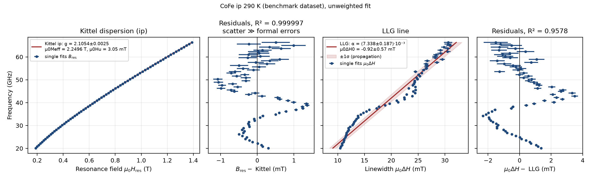

Python tool for bbFMR¶
Version 2.2.109 · Last updated 30.09.2026
TDMS (bbFMR) → per frequency B_res, µ0ΔH (1σ) → Kittel/LLG → g, µ0M_eff, µ0H_u, α, µ0ΔH_0.
Name/version: pyproject.toml ([tool.polderfit] name, [project] version) → polderfit.PROGRAMMNAME.
Conventions
| Quantity | Unit / rule |
|---|---|
| Fields | µ0H in T |
| γ | g·µ_B/ħ in rad s⁻¹ T⁻¹ (g = 2 → 1.7588·10¹¹) |
µ0ΔH |
FWHM of the absorption χ″ (not of |χ|: factor √3) |
| Plots | x = field, y = frequency |
*_err |
1σ from the fit covariance |
Pipeline
| Step | Module |
|---|---|
| 1 Load + channel mapping | io/tdms_laden.py, io/kanal_mapping.py |
| 2 AutoWindow (window per frequency) | fit/autowindows.py |
| 3 Cropping | fit/autowindows.py: schneide_band |
4 Single fit (LM) + post-window B_res ± 2.5·ΔH; several dips per window/corridor: peeling → sum fit with segment bounds (optional BIC) |
fit/linescan_fit.py, fit/batch.py, fit/korridor.py |
| 5 Rating (a)–(h) + user rating | fit/kriterien.py, fit/linescan_fit.py |
| 6 Kittel/LLG | physik/kittel_llg.py, auswertung/uebersicht.py |
| Export, project, settings, auto-backup | persistenz/ |
| Colors per DIN EN 60073 | gui/farben.py |
